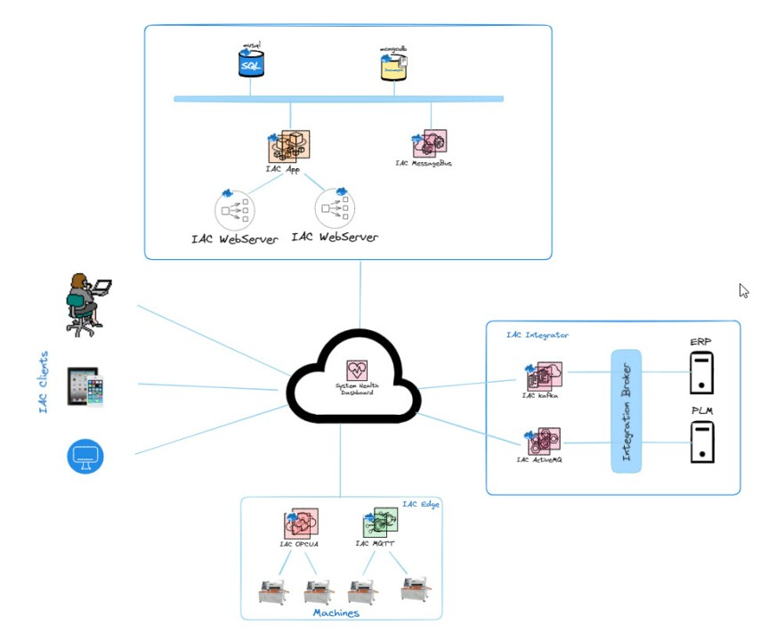
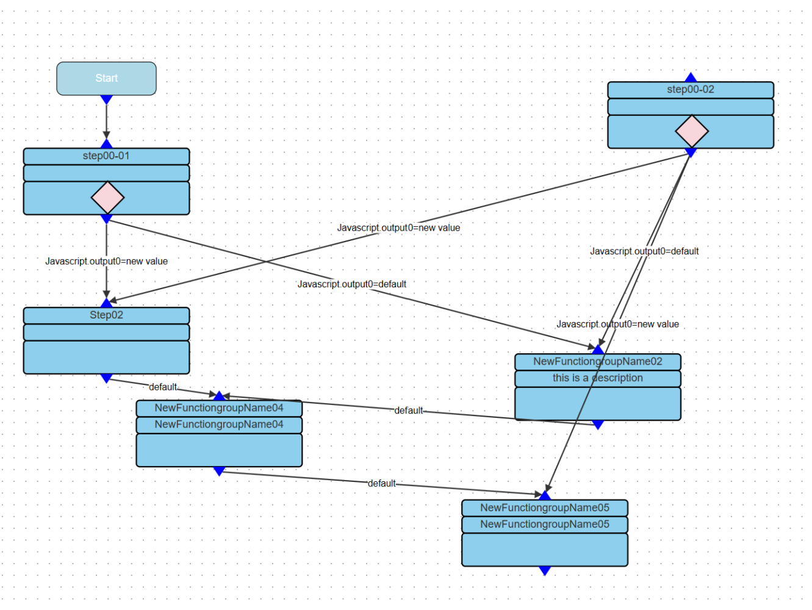
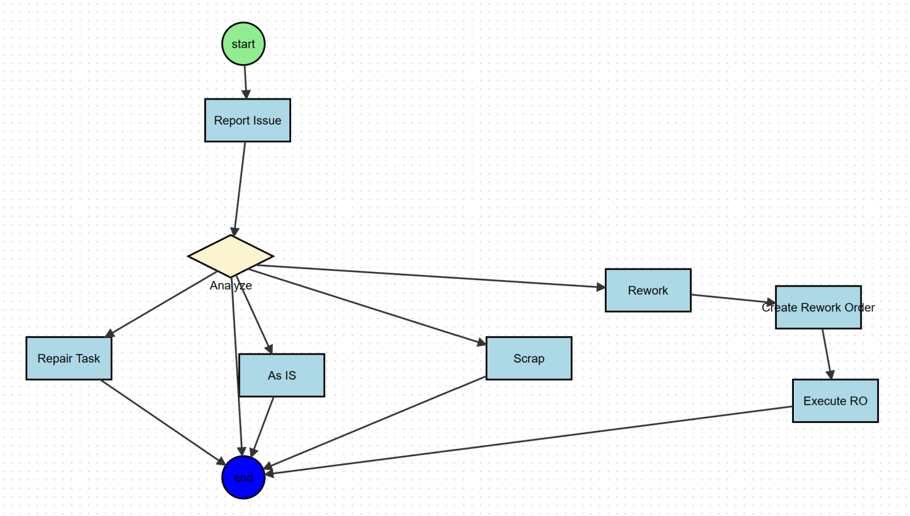
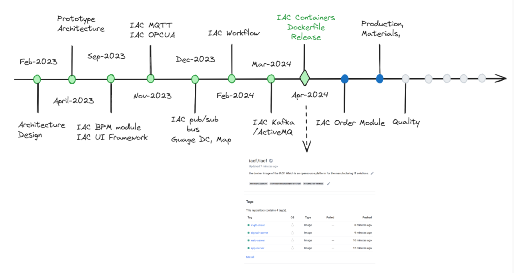

Release 0.1 and Roadmap
In the dynamic landscape of manufacturing, efficiency, agility, and scalability are paramount. Introducing #IACF (Integrated Architecture for Manufacturing), an open-source framework designed to streamline and optimize manufacturing IT solutions. Built with Go in the backend and boasting a modular architecture, IACF empowers organizations to effortlessly deploy and manage their manufacturing processes with just a click.
Simplify Your Deployment Process
Gone are the days of complex and time-consuming deployment procedures. With IACF, deploying manufacturing IT solutions is as simple as configuring a release file and clicking a button. Our prebuilt images ensure a seamless deployment experience, allowing you to focus on what matters most – driving innovation and growth.
Unleash Scalability with Modular Architecture
The beauty of #IACF lies in its modular architecture, which empowers organizations to scale their solutions according to their evolving needs. Each component within the framework can dynamically expand or shrink its workload, ensuring optimal performance and resource utilization at all times.

Empowering Business Logic with BPM Core Modular
At the heart of IACF lies the BPM Core Modular, a powerful tool that simplifies the creation and management of business logic. Whether you're automating workflows, optimizing processes, or orchestrating tasks, the BPM Core Modular provides the flexibility and ease-of-use you need to drive efficiency across your organization.


Streamlined UI Configuration
With the UI Framework, configuring user interfaces and linking them with your business logic has never been easier. Say goodbye to cumbersome UI development processes – IACF's intuitive interface empowers users to effortlessly design, customize, and deploy user interfaces that align perfectly with their unique requirements.
Seamless Edge Integration
IACF goes beyond traditional manufacturing IT solutions by offering seamless integration with edge devices and equipment. With support for MQTT and OPC UA, organizations can connect and communicate with their machines and equipment in real-time, unlocking new opportunities for automation, monitoring, and optimization.
Effortless Integration with External Systems
Connectivity is key in the modern manufacturing landscape, which is why IACF offers robust integration capabilities with ERP systems and other manufacturing platforms. Whether you're leveraging Kafka, ActiveMQ, or REST APIs, IACF ensures seamless communication and data exchange between disparate systems, enabling you to harness the full potential of your manufacturing ecosystem.
What's Next: Order Module
In our latest release, we're excited to introduce the Order Module – a comprehensive solution for order management, execution, production, materials management, and quality management. With the Order Module, organizations can streamline their end-to-end manufacturing processes, from order inception to delivery, while ensuring quality, efficiency, and compliance every step of the way.
Join the Revolution with IACF
Are you ready to revolutionize your manufacturing IT solutions? Join the growing community of organizations leveraging IACF to streamline their processes, drive innovation, and stay ahead of the competition. With its one-click deployment, modular architecture, and powerful features, IACF is the ultimate solution for manufacturing excellence. Experience the future of manufacturing IT – experience IACF today.

Join the Revolution with IACF
Are you ready to revolutionize your manufacturing IT solutions? Join the growing community of organizations leveraging IACF to streamline their processes, drive innovation, and stay ahead of the competition. With its one-click deployment, modular architecture, and powerful features, IACF is the ultimate solution for manufacturing excellence. Experience the future of manufacturing IT – experience IACF today.

Release 0.1 includes the database dump files, docker-compose.yml to run container, iac containers